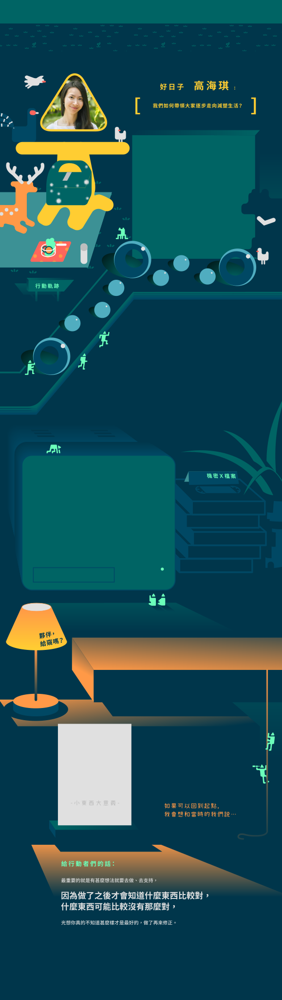
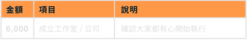
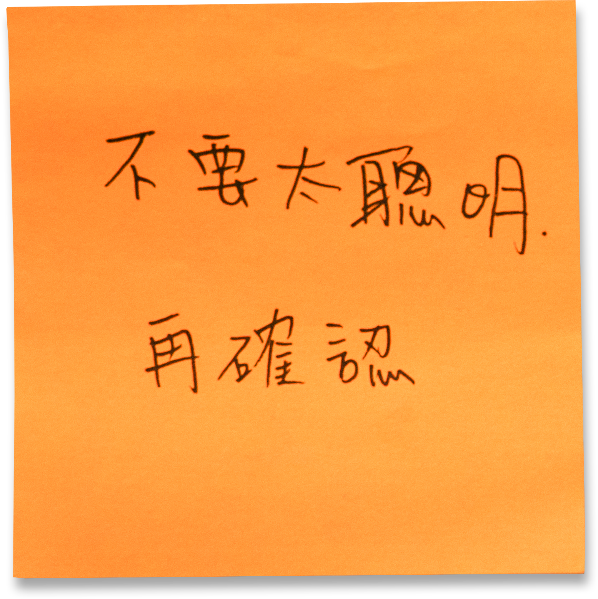
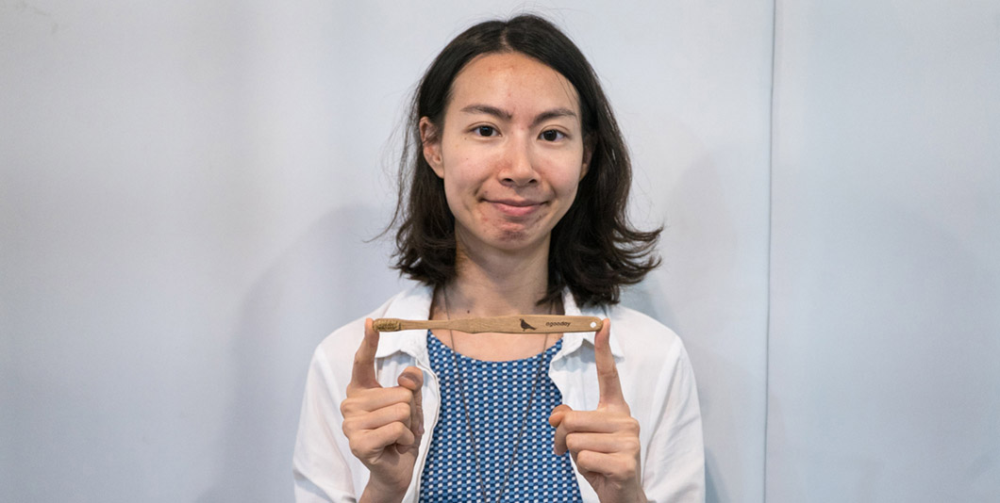

環保就是每一天的生活——好日子
好日子相信生活中每次消費都是一種選擇，期望透過設計的力量改造日常家庭用品，讓每個人、每一天都有參與環保行動的契機，進而改變大家認為環保麻煩又專屬於環保人士的想法，把做環保變得更簡單。好日子自 2015 年品牌創立後，已陸續發起群眾募資專案，如 100% 可分解的竹牙刷、專為台灣外食族設計的 Pockeat 食物袋等，帶領大家共同減少生活中的塑膠製品！
點擊不同的軌跡查看行動夥伴的故事！
行動軌跡 - Action 1
「只要買一個東西，就會多一個包裝，於是垃圾開始累積，而且還要趕著垃圾車倒垃圾啊！」
2015年海琪和時常與大自然有所接觸的男朋友仲威（好日子共同創辦人）開始發想，能不能讓大家都可以使用到比較天然的日用品？或許這樣比較不會產生不能分解的垃圾。於是，他們想到了每天都會用到的「牙刷」，走進生活用品店，放眼望去都是各種塑膠製的牙刷，似乎也沒有其他材質可以選擇。
喜歡自己做東西的她，先用AI畫出底圖，再想辦法拉出3D的樣子，最後列印出一個模型；「欸？這樣好像也可以！」雖然沒有想過要創業，卻意外開啟了設計產品這條路。
行動軌跡 - Action 2
隨著產品漸漸變多，包括蠶絲牙線的推出、pockeat初步打樣，海琪心想不能再繼續用下班後的破碎零散時間做這些事，於是辭去原先的工作，開始了好日子的全職生活。
說起品牌名稱的由來，海琪認為，名字一定要夠親民！於是選了一個簡單、大家一聽就可以記得的「好日子」；除了親民，另一個原因是她想藉由這個品牌，跟大家一起過好日子！
好日子的意義是甚麼呢？海琪說，其實大家都知道環保這件事情，但用塑膠袋真的很方便，所以還是會選擇這個較不環保的作法。好日子希望能有什麼東西勝過方便，讓大家願意接受一點點不方便，他們認為，達到的方法是讓大家開心地使用環保商品，同時商品外觀也要好看，因此好日子致力於此－好看的設計、用的開心，讓環保變得更簡單！
行動軌跡 - Action 3
一開始規模不大，但慢慢地，粉專上出現常見的顧客留言，甚至私訊粉專表達支持，海琪一方面感到驚喜，一方面也漸漸感到壓力。
新產品Pockeat推出後，意外受到許多關注，不只大量的顧客前來詢問，好日子承受的責任與壓力也隨之加遽。
現在的好日子有了兩位正職和一些實習生，海琪也說，好日子依然會持續努力推動讓環保更簡單的方法，讓大家過上好日子！
2015.11 發現問題
透過兩場的個人簡報力工作坊，發現南部的技能學習實體課程的資源缺乏問題，有需求卻沒有足夠的供給。
2015.12 團隊成立
設計師同好加入團隊，將團隊正式成立，釋出「N次坊」名稱與 Logo 視覺
2016.03 第一次外找學生講者的工作坊
自助旅行力，獲得正面的學員回饋，開始信心滿滿
2016.05 理念爭執
團隊成員對於工作坊的類型、定位產生歧異，數位成員離去
2016.10 雜學校策展
參與亞洲最大創新教育展，絕大部份過去成員皆回娘家參與幫忙。最大的收穫並不是行銷宣傳，而是大家回來一起做一件事情，共同的回憶。
2017 團隊運營轉接
將團隊整體運營交棒給新一代成員，執行「成為 Giver 的一百種方法」新專案
Q：為甚麼會有想做「Pockeat」的想法？怎麼執行的？
A：
我們自己出去買東西的時候總會想要減少一些垃圾，比如自備盒子去裝，但是他（仲威）常常忘了帶，便會想「算了不吃了」。後來我們開始思考，有沒有什麼方法可以解決這個狀況？
一開始想到的材質是木片，但台灣很多食物是湯湯水水，出去外面買人家還是會給個袋子啊！裝湯湯水水的東西似乎還是要有個袋子。於是自己做了一些很白癡的打樣，比如第一次的打樣是用家裡有縫紉機，車線後拉起來，發現:完了！還有一個洞。我們感嘆這樣不是辦法，果然要一個袋形比較好拿。
第二個樣本也很好笑，比較接近現在pockeat的樣子，那時候袋子還不知道要用甚麼材質，所以裡面縫了一個打包用的透明塑膠袋，外面再包一個外袋。這個東西我們研究了大概一年左右，真的蠻久。
Q：面對外界對產品有一些質疑的時候，你們如何調適？
A：
之前有人在臉書上問道：「你們推出的牙線使用蠶絲製作，會不會也是另一種一種殺生？」開始製作牙線就會發現，這項產品的材質要能夠承受一定的拉力、能夠耐摩擦，但在這樣的要求下，材質的選擇就會變得很少；如果平常牙線的材質是棉線，使用時棉線斷在牙縫裡面會非常痛苦，我希望好日子提供給大家的選擇，不只是「天然的」，還要是「好用的」。
最後我們還是選擇使用蠶絲來做牙線，當然就會有人說：「你用了蠶絲會傷害蠶的生命！」，但是如果換成用尼龍線來做，也有很大的可能會傷害海龜的生命，我們不能做到盡善盡美、完全完美，其實這就靠每個人的價值觀如何衡量這件事了。
如果遇到外界對產品的質疑呢？對我自己而言，收到質疑的一開始，當然心情會稍微下降一點，但仔細想一想，其實這只是每個人的價值觀、所在乎的事情不一樣，勉強不來的，何況我們提供產品，也就是提供大家另外一個選項，要選不選看每個人自己考量（笑）。
Q：好日子的粉絲專頁好像又具有一點教育性質？
A：
雖然我們在粉絲專頁上都對外宣布「好日子」是賣產品的公司，但在臉書上發布的文章我們更想多一點環保新知；雖然一開始，好日子希望提供大家另外一個選擇，而如果現在有了這些選擇，重點可能又回到資訊層面。
暑假時多了一些實習生，我們開始可以做一些之前想做的事情，像是推出了「無痕背包客」，有一集請了一個香港女生來，教大家一些如何跟店家溝通的香港話，比如一句「如果我要買這個飲料，可以幫我裝在這裡面嗎？」。
「無痕背包客」希望從台灣人比較常去的地方開始，所以選擇了香港。我覺得台灣人其實蠻有環保觀念，大家都很有做的意願，只是到了外面比較不好意思，或是因為語言上的隔閡，聽不懂、不知道怎麼跟對方溝通，因此，我們針對這個情況來想改善方法；香港的單元做完後，接下來想做日本。
Q：你提到環保觀念大家都有，但好像很難潛移默化到每個人的生活，有沒有推不太動的經歷？
A：
其實大家都知道環保，但也會想要方便，只是要做到這之間的取捨而已；像我的家人也是，我爸媽知道要做環保這件事，但我爸爸他很習慣出去買東西跟店家拿個塑膠袋。要環保，時常就會造成不方便。
我覺得在推行環保這方面，重要的是多著墨於教育跟潛移默化，雖然我爸長期以來的習慣是這樣，但如果一直做給他看，比如他要出門的時候跟他說：「帶個袋子」，他就會拿我給他的袋子，久了，也就願意跟著我這麼做了。
這就像在教小孩，你要做給對方看，或是幫他準備做這件事的工具，久了對方就會習慣做這件事情了。
Q：用 6000 元採取的第一步行動
A：
成立工作室 / 公司。目的是為了確認大家都一樣投入。

Q：為什麼會這樣分配
A：
新創時可能會遇到大家有想法，但是不一定有執行力，成立一個工作室/公司，能夠讓團隊更認真重視每一個決定跟認真思考之後的方向。

熱門的 pockeat 怎麼做出來的？

外界對產品質疑時的調適

做為賣產品的公司，也要推廣環保的新知！

「環保」和「方便」的取捨

用 6000 元把想法變行動
A：欸 (叫仲威)
A：多睡覺
猜猜看，行動夥伴隨身的包包裡有些什麼法寶？點擊揭曉
A：People Tree
A：東區
A：急性子、和善、喜歡交朋友




 三張牌 關鍵字
三張牌 關鍵字